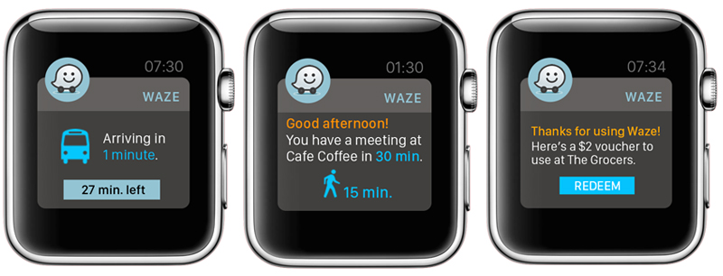

Waze: Interactive Branding Experience
What if Waze could help create driverless cities?
The objective of this project was to create a holistic well-being brand experience. The brand I chose to work with is Waze because I felt it's a powerful app with untapped potential that I wanted to explore. The first phase of the project involved research and discovery. I looked at various social, economic, technological, political and industry trends as well as conducted a SWOT analysis for Waze and three competitors. All of this research helped to inform some initial opportunities for further exploration. From there, I came up with a couple of potential consumer archetypes. This initial phase spanned a few weeks and included multiple brainstorming sessions.
Throughout the initial discovery phase, I was fascinated by this idea of "driverless cities." I knew that, based on my research, cities were becoming more and more dense, we would be seeing an increase in connected devices, and Millennials were less interested in the possession of cars than previous generations. Based on this, and some other findings, I began to sketch and explore several concepts that would build on the incredible capabilities that Waze (owned by Google) has and could have in the not too distant future.
Ultimately, the most compelling and interesting concepts for me, centered around the idea of "driverless cities." Since the goal of the project was to focus on the well-being of users, I felt that this direction made the most sense since commuting and traffic are often some of the more frustrating aspects of our day to day lives, not to mention the health/environmental benefits of alternate modes of transportation. With this idea as my inspiration, I sketched out a user scenario that helped to inform my final concept and designs which can be viewed in the video below.
My Role
All of the work shown here was completed by myself.
Methods
- STEEPx research
- SWOT analysis
- Archetypes
- Sketching
- User journey
- Wireframing
- UI Design
Tools
- Illustrator
- Photoshop
- Keynote